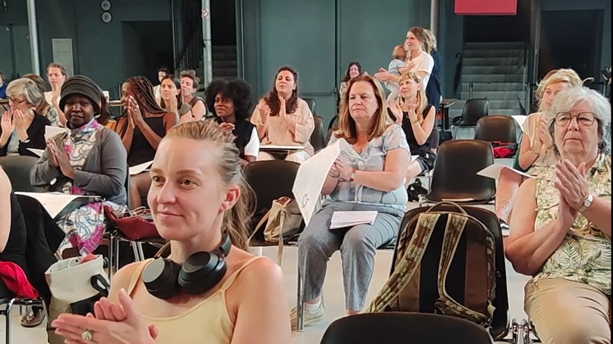

Inclusiecharter
Samen met de acteurs van Cripping de Space namen we een instagramreel op over het inclusiecharter voor mensen met een beperking. We kozen voor een reel zodat het lijvige charter door een groot publiek zou gelezen worden.
Van opname tot online publicatie in no time
De acteurs memoriseren elk een deel van de essentie van het charter. Door een efficiënte planning namen we op korte tijd de versie van 7 acteurs op. Binnen het uur werd de video gemonteerd en al tijdens het festival op instagram gedeeld. Door snel high end content aan te leveren kreeg de video veel liefde online.
